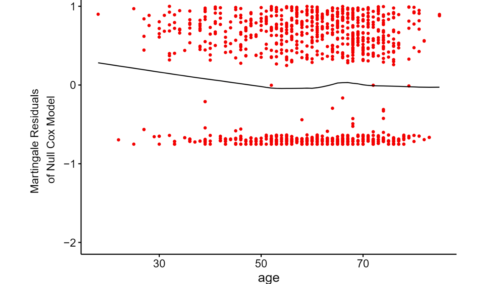
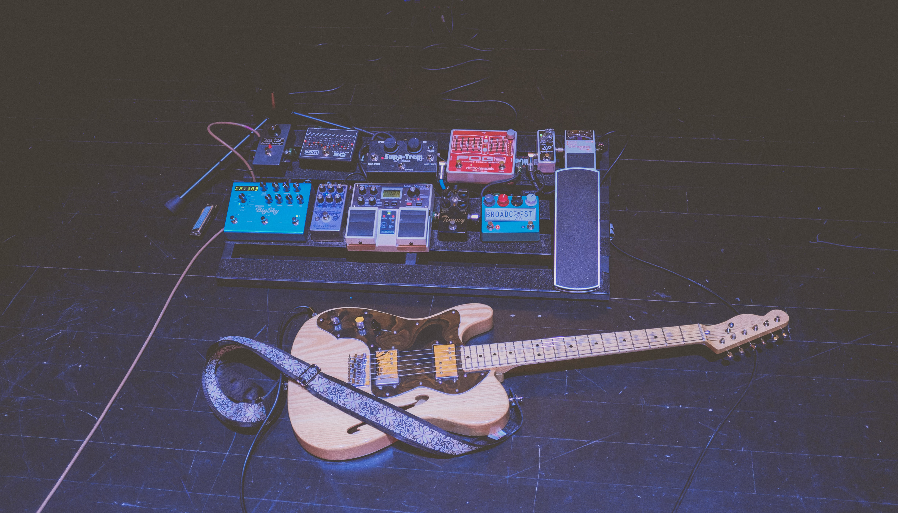

Implemented the best predictive model to forecast the overall skill of the player base with 18 various predictors using R libraries like glmnet and MASS.

Preprocessed data of colon cancer studies for patient's survival time analyses using Cox PH regression to describe the effects of variables on survival.

Constructed the design of resolution III with requiring the mininum length of the letter pattern of the generators using five factors and two generators to assess the experiment.

Using Spotify’s API’s and Genius API’s music attributes to analyze The Smiths discography